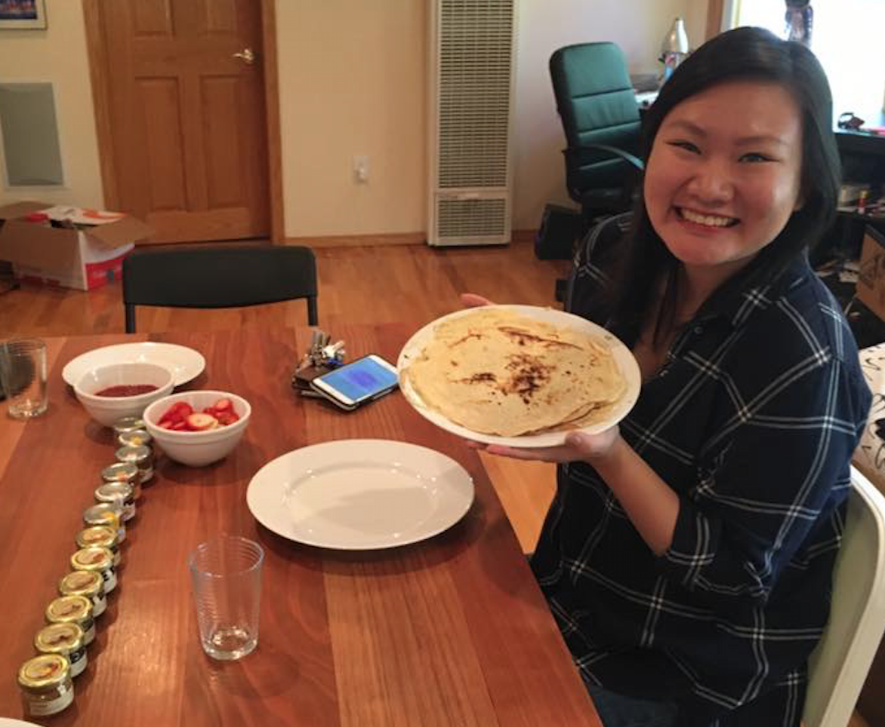

I'm Julie Zhu, a Stanford University graduate. I obtained my Bachelor's degree in Mathematical and Computational Sciences and my Master's degree in Statistics. I'm interested in using data-driven methods and analysis to drive social solutions for multi-faceted issues such as educational reform, financial empowerment, and criminal justice reform.

At Stanford, I was heavily involved in the public service community. I was Vice President of Membership at Alpha Phi Omega, a co-ed public service fraternity, and Director of the ASSU Green Store, a student-run initiative that provided compostable partyware. I also graduated as part of the Public Service Honors Society and served on the Haas National Advisory Board.
The best way to reach me is to email me at lijingjzhu@gmail.com or lijingz@stanford.edu. Explore the rest of my webpage to learn more about me. Thank you for visiting!
- Statistician
- Data Analyst
- Decent Vocalist